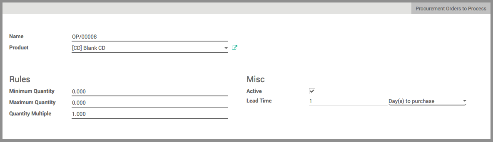

For some items you hold in stock, it might be useful to have rules making sure you never run out of stocks (for example, products with a high demand, or large items requiring a lot of storage space meaning they're harder to stock).
Odoo allows you to set up rules so that an automatic replenishment for those items is made, based on minimum stocks available.
When should I use Reordering Rules?
Reordering Rules work best for items that have a high demand and high flow. It will relieve you from a lot of work to focus on the rest of your activities knowing that stocks will always be right.
It can also be used when you have limited storage space and you need to keep large items in stock. In this case, you can keep as little as 1 item in stock, and have a new one ordered as a stock replenishment as soon as the item in stock is sold.
When should I avoid Reordering Rules?
If you are offering a new product and don't know yet how fast it will go, you should handle stocks yourself first, and setup reordering rules only a few months into the sale to have better forecasts of the demand.
If you sell items that have a limited lifetime, such as fashion items, technology items, or products working together with a system that is meant to evolve, you have to be very well informed on when to stop automated replenishments, in order to avoid having to sell these items at a price that will not allow you to break even.
Пример
My company sells modern furniture. We sell a set of table and chairs that are available in 4 seatings and 6 seatings.
To keep things simple, we stock tables and chairs separately, but sell them all together to our clients as a kit. In order to make sure we can always deliver a complete set of table and chairs, I setup a Reordering Rule for the chairs to make sure I always have at least 10 chairs in stock, but no more than 20. This way, I can sell up to 5 sets of table at once while keeping my stock low enough not to eat up all my storage space.
The last table I sold was a 4 seatings, and there were 12 chairs left in my stock. Because the stock in chairs is now only 8 chairs, Odoo will automatically order 12 new chairs to fill up my stock to the maximum amount.
Настройка
Set up your product
In the Purchases module, open the Purchase menu and click on Products. Open the product to which you would like to add a Reordering Rule (or create a new one).
3 conditions for correct reordering rule :
- In , make the product stockable (as soon as this is done, the icon "Reordering rule will appear)
- In , tick the "Buy" box (and untick the Make To Order box)
- Select a vendor (don't forget to put a minimal quantity greater than 0)
Create a reordering rule
Click on the Reordering Rules tab, click on Create. A new page opens.
By default, Reordering Rules in Odoo are named as "OP/XXXXX" but you are free to use any nomenclature. You can modify it via the Name field.
The Product field is the product you are creating the rule for.
Select the warehouse to which the product should be delivered in the Warehouse field.
If you have configured multiple warehouses and location, specify the location in which the product will be stored in the Location field.

In the Minimum Quantity field, insert the quantity to which the system will trigger a new order for replenishment.
In the Maximum Quantity field, insert the maximum of items that has to be stocked. The replenishing order will be based on that quantity to reorder.
The Quantity Multiple is the lowest number of items that can be ordered at once. For instance, some items may be only available for purchase in a set of 2.
In the Misc section, the Active box allows you to activate or deactivate the rule.
In the Lead Time section, you can enter:
- the number of Day(s) to purchase: correspond to the number of days for the supplier to receive the order
- the number of Day(s) to get the products
Совет
By default, the lead times are in calendar days. You can change that in
When you have entered all the info, click on Save.
From now on, every time a product with a reordering rule reaches the minimum stock, the system will automatically send a RfQ to your supplier based on your maximum quantity to replenish your stock.
Совет
The replenishments will take place when the scheduler in the Inventory module runs. By default in Odoo, the schedulers will run every night at 12:00PM.
To know how to configure and run the schedulers manually, read the document on How to configure and run schedulers?